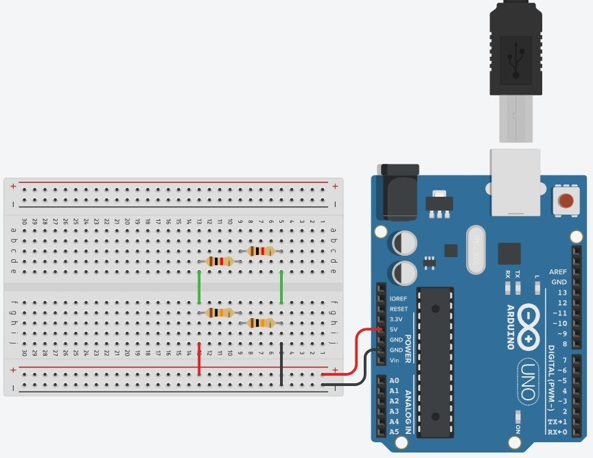
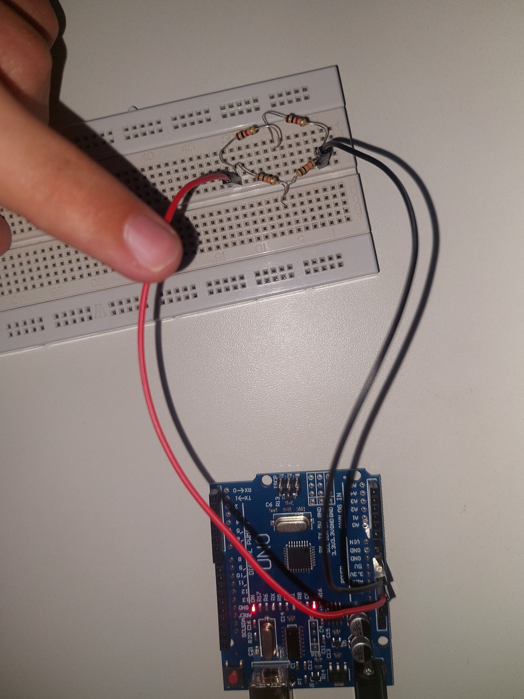
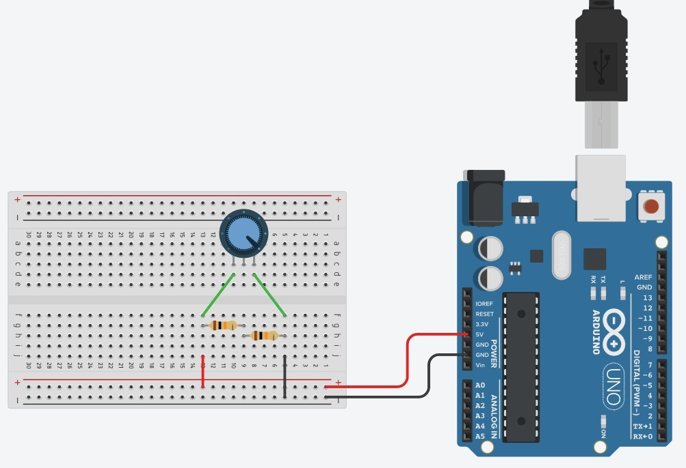
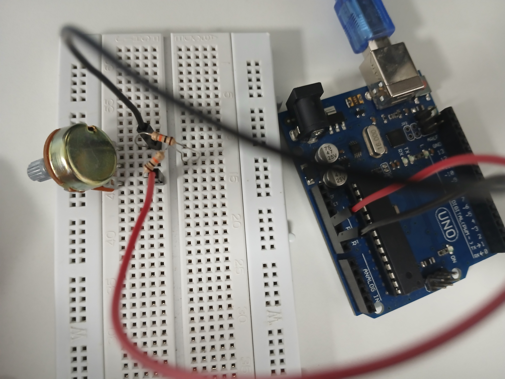
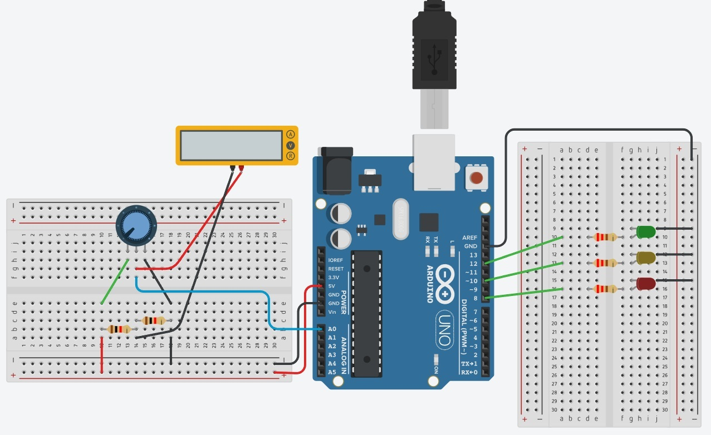
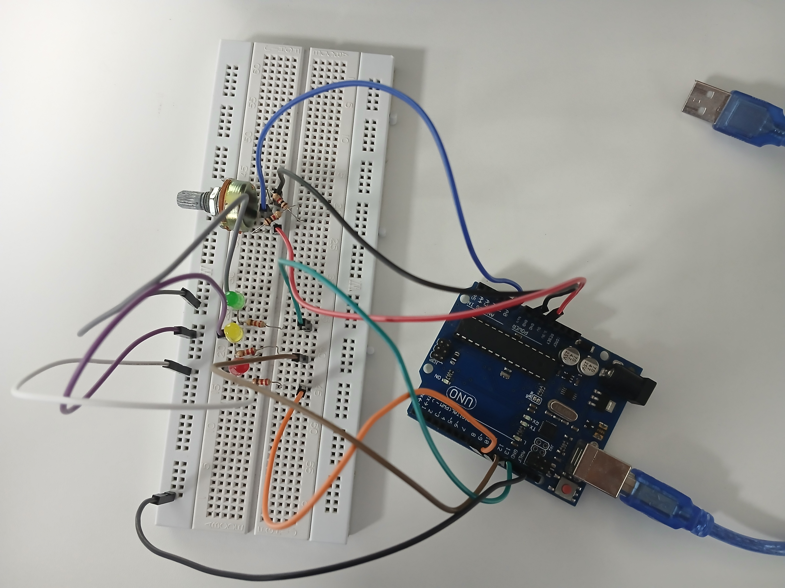

Ponte de Wheatstone
Definição:
A Ponte de Wheatstone é um circuito elétrico usado para medir resistências elétricas desconhecidas com alta precisão, muito aplicada em sensores e instrumentação. Foi inventada por Samuel Hunter Christie em 1833 e popularizada por Charles Wheatstone em 1843. O circuito é composto por quatro resistores em formato de losango, uma fonte de tensão e um detector central (galvanômetro), permitindo determinar com exatidão o valor da resistência medida quando a ponte está em equilíbrio.
Circuito no Tinkercad - Ponte de Wheatstone (4 Resistores):

Circuito Físico - Ponte de Wheatstone (4 Resistores):

Medição no Circuito Físico - Ponte de Wheatstone (4 Resistores):

Circuito no Tinkercad - Ponte de Wheatstone (2 Resistores e 1 Potênciômetro):

Circuito Físico - Ponte de Wheatstone (2 Resistores e 1 Potênciômetro):

Medição do Circuito Físico em Funcionamento - Ponte de Wheatstone (2 Resistores e 1 Potênciômetro):
Circuito no Tinkercad - Ponte de Wheatstone (4 Resistores, 1 Potênciômetro e 3 LEDs):

Circuito Físico - Ponte de Wheatstone (4 Resistores, 1 Potênciômetro e 3 LEDs):
